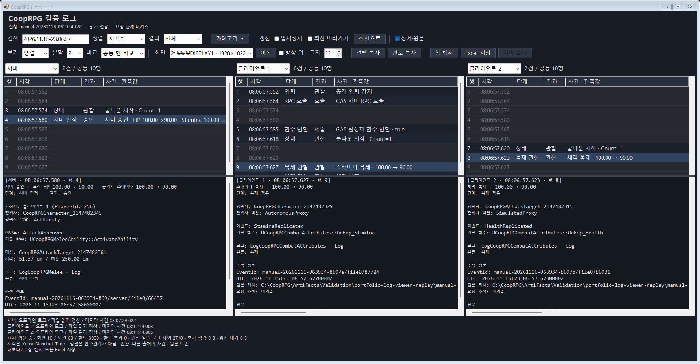

전용 서버와 두 클라이언트를 한 화면에서 확인
왼쪽은 서버 승인, 가운데는 클라이언트 1의 자기 Pawn 스태미나, 오른쪽은 클라이언트 2가 받은 표적 체력이다. 목록에서 사건을 고르면 아래 상세에서 PlayerId·Actor 역할·기록 함수와 원문 위치를 확인할 수 있다.

2026-11-16 사용자 수동 실행의 첫 승인과 해당 시각의 복제를 최종 배치에서 재생했다. 이미지를 열면 원본 크기로 볼 수 있다.
제작 의도와 진행 계획
독립 패키지는 전용 서버와 두 클라이언트를 별도 프로세스로 실행한다. 두 게임 창을 조작하는 동안 세 로그 파일을 따로 열어 입력이 들어갔는지, 서버가 승인했는지, 양쪽 화면에 같은 값이 반영됐는지를 확인하기 어려웠다. 그래서 게임 창을 조작하면서 별도 화면에서 판정과 복제를 읽을 수 있도록 했다.
- 실시간 창을 실행에 연결하고, 통합 보기와 서버·클라이언트별 로그를 제공했다.
- 실제 사용 중 요청받은 병렬 비교, 검색·카테고리 필터, 캡처·Excel 저장을 추가했다.
- 같은 사건을 여러 창에서 읽을 때 혼동된 호출 시점과 요청자를 확인할 수 있도록 표시와 게임 로그를 보완했다.
사용자와 AI의 역할
AI와 협업할 때는 구현에 앞서 사용자가 직접 결과를 확인할 수 있도록 검증 환경과 관찰 기준을 정한다. 로그 뷰어에서는 두 클라이언트의 서버 판정과 상태 복제를 대조할 화면 배치와 표시 정보를 먼저 정하고, 구현 뒤 새 패키지에서 직접 확인했다.
사용자 작업
사용자는 두 창을 직접 조작하며 입력의 성공 여부가 보이지 않는 문제를 제기했다. 두 모니터 배치, 병렬 비교, 상세의 정보 우선순위를 결정했고, 나중에는 새 패키지에서 직접 공격하고 PNG·상태 JSON·XLSX를 저장했다.
AI 작업
AI는 WinForms 뷰어·런처와 게임 로그 계측을 구현했다. 빌드와 자동 교대 공격, 동일 로그 재생, 넓은·좁은 창 검사를 수행했다. 사용자 실행은 원문과 내보내기 자료를 대조해 판정·복제 값이 일치하는지 확인했다.
게임 로그에서 검증 자료까지
- 프로세스별 기록전용 서버 1개와 클라이언트 2개가 독립 로그를 작성한다.
- 읽기·분류원문을 읽고 사건 종류·시각·파일 위치를 추출한다.
- 출처·요청자 표시각 클라이언트의 자기 PlayerId를 서버 판정의 PlayerId와 대조한다.
- 목록·상세 비교통합 또는 병렬 보기에서 사건과 Actor 역할, 원문을 확인한다.
- 검증 자료 저장PNG로 보이는 화면을 남기고 XLSX로 필터된 목록을 저장한다.
게임 서버는 공격 조건과 피해를 판정한다. 뷰어는 서버와 클라이언트의 로그 파일을 읽고, 화면에서 고른 사건을 원문의 파일 위치까지 연결한다.
서버의 요청자 ID는 공격 Pawn의 소유 연결과 PlayerState에서 얻는다. 뷰어는 같은 실행에서 각 클라이언트가 기록한 자기 PlayerId와 대조한다. ID가 없으면 미계측, 둘 이상의 출처에 같은 ID가 나타나면 출처 미확인으로 표시한다.
사용자 수동 검증 사례
같은 PC에서 Win64 Development 전용 서버 1개와 클라이언트 2개를 실행했다. 사용자는 고정 표적 가까이와 사거리 밖에서 두 창을 각각 조작했다. AI는 사용자가 내보낸 자료와 프로세스 원문을 대조했다.
| 확인 항목 | 실제 관찰 |
|---|---|
| 서버 승인·거절 | 클라이언트 1 (256) 승인 3건, 클라이언트 2 (257) 승인 1건. 사거리 밖 거절은 각각 1건이었다. |
| 자기 Pawn | 스태미나 복제에서 각 클라이언트의 자기 Pawn이 AutonomousProxy로 기록됐다. |
| 고정 표적 | 양쪽에서 SimulatedProxy로 기록됐고, 표적 HP는 100 → 90 → 80 → 70 → 60으로 같았다. |
별도의 AI 자동 시험에서는 두 클라이언트가 1 → 2 → 1 → 2 순서로 공격했다. 서버 승인 4건의 PlayerId와 승인 이후의 양쪽 표적 HP 및 자기 스태미나를 대조했다.
검증에서 발견한 문제와 보완
| 발견한 문제 | 적용한 보완과 확인 |
|---|---|
| 하나의 공격에서 GAS 호출과 함수 반환이 섞여 보였다. | 엔진의 서버 RPC 호출과 프로젝트의 GAS 함수 반환을 별도 사건으로 표시했다. 같은 사용자 로그로 재생하고 기존 원문과 EventId를 대조했다. |
| 요청 클라이언트를 Actor 이름만으로 식별하기 어려웠다. | 서버에서 확인한 PlayerId를 기록하고 클라이언트의 자기 ID와 대조했다. 자동 교대 공격과 사용자 수동 실행에서 두 요청자를 확인했다. |
| 조작부의 값만 보고 설정 용도를 파악하기 어려웠다. | 검색 → 정렬 → 결과 순으로 묶었다. 같은 로그 83건을 1920×1000과 900×700에서 재생해 순서와 줄바꿈을 확인했다. |
완료 범위는 같은 PC에서 실행한 독립 패키지의 로그 비교, 요청자·Actor 역할 표시, 원문 확인 및 내보내기다. 요청 하나와 복제 행을 ID로 연결하는 기능은 설계 단계다. 화면의 시각순과 공통 행은 관측을 비교하는 기준으로 사용한다.
근거 및 더 읽기
아래 링크는 CoopRPG 저장소 안의 원본 기록을 가리킨다. 원본 로그의 세부 위치와 실행 조건은 각 검증 기록에서 확인할 수 있다.